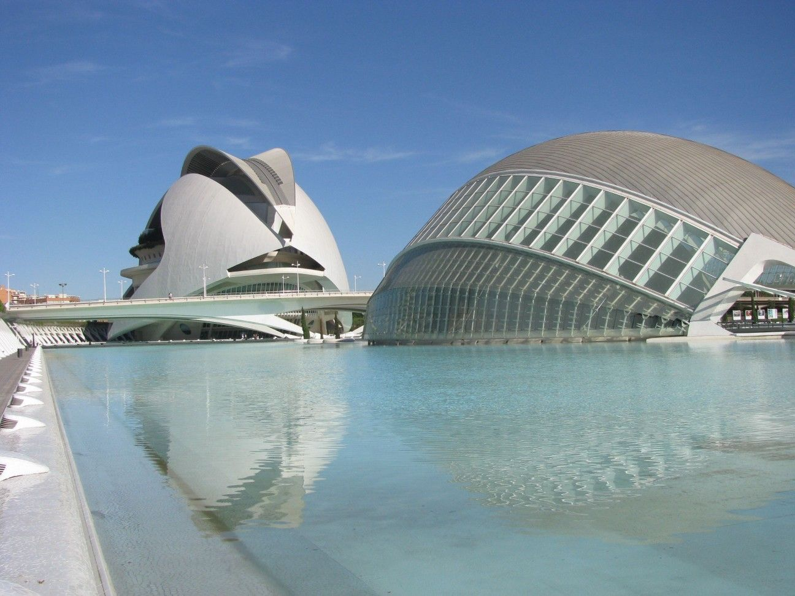

A catedral foi edificada sobre uma antiga mesquita, e sua construção começou no século XIII, embora tenha sofrido numerosos retoques até o século XVII. Nela confluem vários estilos arquitetônicos, com um claro predomínio do gótico. Uma das joias do interior do templo é a Capela do Santo Cálice, a antiga sala capitular, com sua bonita abóbada em estrela, uma imagem do céu com os 12 apóstolos e a coroação da Virgem. Dentre todos os seus objetos, o destaque é a relíquia do Santo Cálice, um copo do século I d.C. que, segundo a tradição, foi utilizado por Jesus para instituir a Eucaristia. Enquanto isso, no exterior da catedral se destacam a Porta do Palau, a mais antiga do templo, de estilo românico com elementos mudéjares, e a dos Apóstolos (século XIV).
A Cidade das Artes e das Ciências de Valência se estende ao longo de quase dois quilômetros no antigo leito do rio Turia. É integrada por seis grandes elementos: o Hemisfèric (um cinema IMAX onde é possível ver projeções digitais), o Umbracle (um bonito mirante com jardins), o Museu das Ciências Príncipe Felipe (com inúmeras atividades para interagir), o Oceanogràfic (o maior aquário da Europa, com mais de 500 espécies marinhas), o Palau de les Arts Reina Sofía (dedicado à programação de óperas) e a Ágora (um espaço multifuncional para a organização de shows e diversas atividades).
O mercado foi construído majoritariamente entre 1482 e 1492, sob a direção do mestre de cantaria Pere Compte. A culminação da obra por um discípulo seu, após sua morte, explica a presença de elementos renascentistas. A Lonja de la Seda foi considerada um dos edifícios mais bonitos da arquitetura gótica civil europeia. Sua semelhança com os antigos castelos medievais baseia-se no férreo aspecto de fortaleza que seus sólidos muros de pedra lhe dão. Consta de quatro partes: a Torre, a Sala do Consulado do Mar, o Pátio de Los Naranjos (laranjeiras) e o Salão das Colunas. A extensão do conjunto supera 2.000 metros quadrados entre áreas edificadas e não edificadas. Aos domingos, além disso, há uma exposição de moedas e selos.